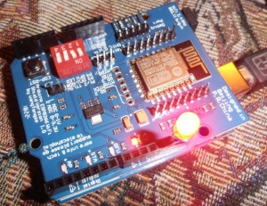

Как у меня заработал WIFI для Arduino ESP8266 ESP-12E
27 января 2019 г.Просмотров: 11508Комментарии: 0
ArduinoМониторингГаджетыArduinoESP8266WiFiИнтернет Вещей
Плата ESP8266 ESP-12 ESP-12E UART Wi-Fi устанавливается сверху на плату Arduino UNO R3 и позволяет получать доступ к управлению и состоянием Arduino из интернет. И я заставил этот слоеный пирог заработать.
Компоненты Arduino для работы покупал в магазине All Electronics Trading Company.
Все быстро пришло. Почти все из того что заказал в этом магазине было отличного качества.
Исключение составляла комбинированная плата с разными датчиками, светодиодами и кнопками s.click.aliexpress.com/e/ct9JuGza. Эта плата была какой-то ручной пайки, но полностью работала.
Платы, которые использовались при написании статьи:
и
Arduino UNO R3 из состава набора Upgraded Advanced Version Starter Kit the RFID learn Suite Kit LCD 1602 for Arduino UNO R3.
Несмотря на то что нашел исчерпывающую инструкцию по запуску платы ESP8266 ESP-12E (назовем ее Инструкция №1), получилось не сразу.
Скачал по ссылке со страницы инструкции 1 FLASH_DOWNLOAD_TOOLS_v2.4_150924 и прошивку Ai-Thinker_ESP8266_DOUT_32Mbit_v1.5.4.1-a AT Firmware.
Закачал пустой скетч в Arduino U3.
void setup () {
// поместите здесь свой установочный код, чтобы запустить его один раз:
}
void loop () {
// поместите ваш основной код здесь для повторного запуска:
}
Действуя по инструкции 1 я ничего не достиг. Все комбинации перепробовал.
Раньше где-то слышал, что процедура прошивки требует намного большей мощности, чем штатная работа, и мощности питания от Arduino не всегда хватает.
На момент прошивки нужен отдельный источник питания. Заподозрил что у меня именно эта ситуация.
Помогла Инструкция №2 по подключению ESP8266 ESP-12E к UNO.
Esp8266 питается от 3.3V, а Uno использует 5V. В инструкции 1 написано, что 5V не трогаем. Автор инструкции 2 подключает на свой страх и риск (о чем говорит) плату Esp8266 к 5V выходу UNO R3. Я тоже так решил сделать, подключив все вот так.
Тут дело сдвинулось с мертвой точки, почти сразу же опять застопорившись.
Плата синхронизировалась, но как-то не до конца.
Содержимое окна FLASH_DOWNLOAD_TOOLS_v2.4_150924 было почти такое же, как в инструкции 1:
но у меня поле MAC adress заполнилось, а вот DETECTED IINFO оставалось пустым.
В логе содержалась фраза "error read crystal". Подумал было что все-таки сжег плату, подав напряжение 5V на свой страх и риск.
Но нашел подобную проблему в ветке форума ERROR FLASHING FIRMWARE. Проблему решили, записав в Arduino U3 пустой скетч.
Да я же делал это в самом начале!
Снова записал пустой скетч и на этом этапе все заработало. А именно - содержимое окна FLASH_DOWNLOAD_TOOLS_v2.4_150924 стало таким же, как в инструкции 1.
И прошивка залилась в плату ESP8266 ESP-12 ESP-12E UART Wi-Fi.
Может, когда на первом этапе ничего не получалось, что-то залил в Arduino R3?
Начал дальше следовать инструкции 1, поместив плату ESP8266 на Arduino UNO R3 - и опять ничего не ладилось. Что бы не делал с переключателями Р1, Р2 - не проходили команды.
Снова обратился к инструкции 2.
Вернул подключение ESP8266 к UNO через Debug Port, но уже с использованием 3.3V - flash загрузчик уже не надо было использовать и решил не испытывать плату на прочность.
И отправил при таком подключении команду «AT+UART_DEF=9600,8,1,0,0». Вернуло ERROR.
Тут оказалось, что внимательно надо следить за регистрами и за отсутствием пробелов. Команды копировал с сайтов, а там были пробелы и поэтому возвращало ERROR.
Также нужно следить за регистрами. Команда "AT" принимается как в верхнем, так и в нижнем регистре. Остальные команды только в верхнем.
Решить эти проблемы помогла ветка https://esp8266.ru/forum/threads/error-oshibka-at-komand.126/.
Дальше действовал по инструкции 1.

Использовал немного модифицированную библиотеку WiFIESP и код Web-сервера со страницы инструкции 1.
Можно использовать и оригинальную библиотеку WiFIESP.
Небольшой трудностью на этом этапе было привязать статичный IP адрес - пришлось выяснять пароль от модема ZyXel Keenetic 4G II.
И все заработало.
Теперь можно было с Web-страницы при помощи кнопки управлять светодиодом, подключенным к Arduino UNO R3, и видеть его состояние.
Материалы со страницы "Инструкция 1".
Почему бы не использовать совмещенную плату UNO+ESP8266?
Есть в природе плата, аналогичная вроде-бы двум описываемым выше.
UNO + WiFi R3 ATmega328P + ESP8266 (32 Мб памяти), USB-TTL CH340G. Совместимость Uno, NodeMCU, WeMos ESP8266.
Продается по цене 360р:
http://s.click.aliexpress.com/e/bCHsJmh6
http://s.click.aliexpress.com/e/pq9qvHm
Получается дешевле на 100р, чем описываемые выше в паре.
UPD
Заказал и протестировал совмещенную плату UNO+WiFi.
С ней оказалось все немного по другому.
Еще записи по теме
Подключаем Arduino UNO при помощи ESP8266-12E к облаку Cayenne
Версия 02 плагина My_ESP8266 для MaxSiteCMS.
Отправка данных из ESP8266WiFi на сервер с CMS MaxSite
Мониторинг Arduino UNO + ESP8266 через облачный сервер RemoteXY
Отправляем состояния теплых полов из Arduino UNO ESP8266 WiFi на сервер ThingSpeak
Используем Arduino UNO с WiFi на одной плате для POST запроса на сервер
�